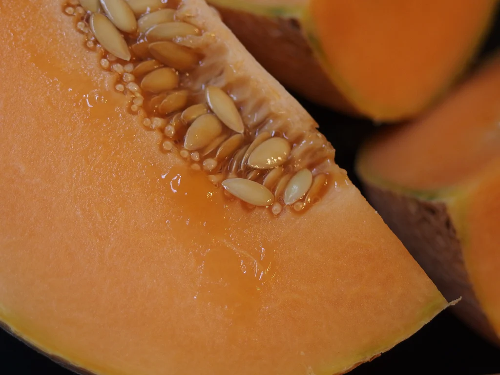

Watermelons are some of our favorite sticky sweet melons for the height of summer.
They have a very high water content, similarly to cucumbers. Watermelons are grown in
tropical to temperate regions worldwide. They produce large fruits that are typically a
bright red or hot pink color on the inside (though can be white or yellow as well) with a
beautiful green rind on the outside. Commonly eaten raw alongside hot dogs and hamburgers,
watermelon can also be blended into a delicious beverage or pickled for a shockingly delicious
and unique snack.
Cantaloupe, Cucumis melo
Cantaloupes are sweet and tender and tend to be a bit fleshier than watermelons.
Typically, they're known for their bright orange insides with an ordinary beige rind.
They love sandy soils but can be grown in many climates. Try adding cantaloupe to your
charcuterie board or slicing it up into a salad!

Honeydew, Cucumis melo L. Inodorus
Honeydew melons are a close cousin of the cantaloupe - just take a look at their
latin names! Honeydew is known for its green, not overly sweet flesh and performs
particularly well here in the Southeast but can certainly be found growing elsewhere.
Casaba, Cucumis melo var. Inodorus
Casaba melons, yet another cousin of the honeydew and cantaloupe, is a white fleshed
melon that looks more like a squash due to its textured yellow rind. Its unique flavor
makes it delicious in both sweet and savory dishes and it grows best in dry, hot climates.